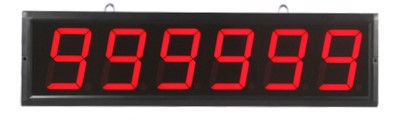
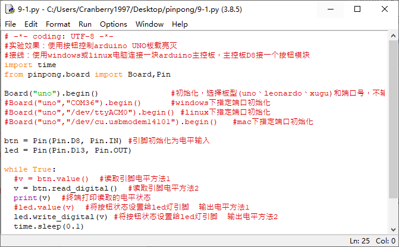
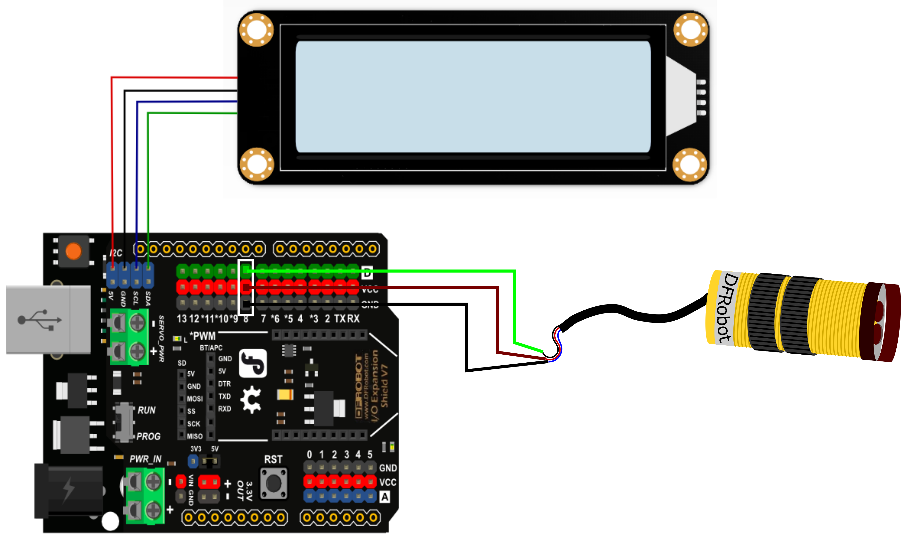

项目9 游园人数统计¶
一、概述¶
在去景区游玩的时候我们常能看到门口会有个计数器，上面写着“今日游客数量 XXXX”用于告知大家今日在园内游玩的人数，那这个计数功能是如何实现的呢？接下来跟我们一起来学习吧。
二、项目实施¶
（1）使用红外光电开关检测是否有人经过¶
程序编写：¶
1、红外光电开关是通过检测指定距离内（3~80cm，可以调节）是否有物体经过，当检测到有人通过的话，会输出低电平，当没人经过的时候会输出高电平。看起来功能和我们之前用过的按钮的功能类似，是数字输入，所以我们以示例程序中的button.py为基础进行修改。
2、原程序是摁下按键时L灯亮起，但是红外光电开关是触发时输出低电平，未触发时输出高电平，所以将条件置反，就可以当传感器触发时灯亮，未触发时灯灭的功能。
import time
from pinpong.pinpong import PinPong,Pin
board = PinPong("uno") #初始化，选择板型和端口号，不输入则留空进行自动识别
btn = Pin(board, Pin.D8, Pin.IN) #引脚初始化为电平输入
led = Pin(board, Pin.D13, Pin.OUT)
while True:
v = btn.value() #读取引脚电平
print(v) #终端打印读取的电平状态
vl = abs(v-1) #将v值取反
led.value(vl) #将按钮状态设置给led灯引脚
time.sleep(0.1)
（2）让屏幕显示人数¶
硬件准备：¶
主控：Arduino UNO、IO 传感器扩展板 V7.1
模块：1602LCD显示屏、红外光电开关
连接线：TypeAtoB方口USB连接线
将1602LCD显示屏接入IIC接口
将红外光电开关接入8号数字接口
程序编写：¶
1、导入必要库和模块，参考之前使用过的LCD屏所需的部分和pin部分。
import time
from pinpong.pinpong import PinPong
from pinpong.pinpong import PinPong,Pin
from pinpong.libs.lcd1602_i2c import LCD1602_I2C
2、然后对需要用到的功能进行初始化设置。
board = PinPong("uno")
sw = Pin(board, Pin.D8, Pin.IN) #引脚初始化为电平输入
led = Pin(board, Pin.D13, Pin.OUT)
lcd = LCD1602_I2C(board, 0x20) #初始化LCD的I2C地址
lcd.backlight(True) #打开背光
lcd.clear() #清屏
v = 1
lcd.set_cursor(4,0) #设置光标位置
lcd.print("Visitors") #显示标题
3、每当有人经过就将变量v增加1并用显示屏显示人数。
while True:
if sw.value() == 0:
v = v+1
led.value(1)
time.sleep(0.5)
print(v) #终端打印读取的电平状态
lcd.set_cursor(7,1)
lcd.print(v)
三、代码分析¶
import time
from pinpong.pinpong import PinPong
from pinpong.pinpong import PinPong,Pin
from pinpong.libs.lcd1602_i2c import LCD1602_I2C #从libs中导入lcd1602_i2c库
board = PinPong("uno") #初始化，选择板型和端口号，不输入则留空进行自动识别
sw = Pin(board, Pin.D8, Pin.IN) #引脚初始化为电平输入
led = Pin(board, Pin.D13, Pin.OUT)
lcd = LCD1602_I2C(board, 0x20) #初始化LCD的I2C地址
lcd.backlight(True) #打开背光
lcd.clear() #清屏
v = 1
lcd.set_cursor(4,0) #设置光标位置
lcd.print("Visitors") #显示标题
while True:
if sw.value() == 0:
v = v+1
led.value(1)
time.sleep(0.5)
print(v) #终端打印读取的电平状态
lcd.set_cursor(7,1)
lcd.print(v)
四、硬件分析¶
红外光电开关
红外接近开关是一种集发射与接收于一体的光电开关传感器。数字信号的输出伴随传感器后侧指示灯亮的亮灭，检测距离可以根据要求进行调节，可调范围3-80cm。该传感器具有探测距离远、受可见光干扰小、价格便宜、易于装配、使用方便等特点，可以广泛应用于机器人避障、互动媒体、工业自动化流水线等众多场合。